Install Windows

Cara Instal windows adalah
1.Memasukan Installer Windows 7 yang sudah Anda siapkan dan catat serial numbernya
2. Atur agar booting awal melalui DVD. Pengaturan dilakukan di bios. Anda bisa simpan lalu restart
3. Jika muncul perintah Press any key too boot from CD or DVD, bisa tekan tombol apa saja. Setelah itu muncul proses Windows is loading files, dilanjut starting windows
4. Pilih Language to install, Time and currency format, untuk keyboard biarkan us, lalu klik next
5.karena tujuannya adalah menginstal, maka pilih instal now.
6. Tunggu pada proses setup is starting
7.beri centang, kemudian klik next
8. Pilih Custom (advenced). Agar dapat memilih drive mana windows 7 yang akan di install.
9. Bagilah hardisk minimal 2 drive.
Satu untuk windows 7(C/primary) dan satu drive untuk data (D/logical) dengan memilih drive option, sebelum lanjut pilihlah disk 0 partition 2 yang merupakan partisi (C). Kemudian klik next
10.tunggu proses instalasi
11.computer otomatis restart
12.setelah itu tunggulah proses setup is starting service
13. Proses install dilanjutkan otomatis
14.setelah selesai proses kembali restart
15. Tunggu proses setup is preparing your computer for first use selesai
16. Dan dilanjutkan proses setup is checking vidio perfomance
17.Setelah proses diatas, anda memasukan username dan computer name, kemudian klik next.
18. Masukan password, bisa langsung next jika tidak perlu
19.masukan product key, lalu klik next. Jika tidak punya klik skip
20. Pilih opsi yang diinginkan untuk fasilitas windows updet
21.pilih zona waktu
22.tetapkan lokasi jaringan, jika terhubung dalam sebuah jaringan
23.anda sudah berhasil menginstal windows